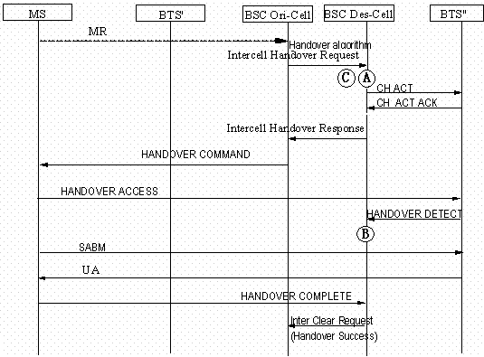

Measurement Counters
| ID | Counter | Description |
|---|---|---|
| 1278087421 | CELL.KPI.SD.SUCC | K3003:Successful SDCCH Seizures |
Description
This counter provides the number of SDCCHs that are successfully occupied by MSs.
In an SDCCH immediate assignment procedure, the BSC regards that an MS has successfully occupied an SDCCH when it receives a CHANNEL ACTIVATION ACKNOWLEDGE message from the BTS.
In an SDCCH handover procedure, including the intra-cell handover, internal inter-cell handover, and external inter-cell handover, the BSC regards that an MS has successfully occupied an SDCCH when it receives a HANDOVER DETECTION message from the BTS.
Measurement point
In the immediate assignment of the SDCCH, when receiving the CHANNEL ACTIVATION ACKNOWLEDGE message from the BTS, the BSC measures the counter in the local cell. See measurement point B in Figure 1.
In the internal inter-cell handover procedure (including intra-cell handover), when receiving the HANDOVER DETECTION message from the BTS, the BSC measures the counter in the target cell. See measurement point B in Figure 2.

In the incoming BSC SDCCH handover procedure, the BSC measures the counter in the target cell when it receives a HANDOVER DETECTION message from the BTS, as shown by point B in Figure 3.

Formula
Successful SDCCH Seizures = [Channel Activation Attempts in Immediate Assignment Procedure (SDCCH)] - [CHAN ACTIV NACK Messages Sent by BTS in Immediate Assignment Procedure (SDCCH)] - [Channel Activation Timeouts in Immediate Assignment Procedure (SDCCH)] + [Internal Intra-Cell Handover Detection Messages Received by BSC (SDCCH)] + [Number of Incoming Internal Inter-Cell Handover Detection Messages Received by BSC (SDCCH)] + [Incoming External Inter-Cell Handover Detection Messages Received by BSC (SDCCH)]
Unit
None
Related Features
| Counter | Feature ID | Feature Name |
|---|---|---|
| CELL.KPI.SD.SUCC |
GBFD-110502 |
Assignment and Immediate Assignment |